← 返回阅读库 · 原论文目录
论文讲解阅读文档 · 多模态语言模型 · v041
Open-vocabulary Object Segmentation with Diffusion Models
视频时长 00:09:19；讲解文字 4,998 字符；提取讲解画面 14 张。按视频原顺序阅读，每段文字保留时间戳。
文字来自整段视频的自动语音转写，按自然停顿分段，并与 PPT / 论文页面 / 演示画面对齐。未将讲解压缩为摘要；术语、数字和口述公式请结合画面及原论文核对。 阅读稿已校正规范部分明确术语误识别；原始逐字稿和每处修改记录另行保留。
讲解画面为源视频截图（640×360），不是可编辑 PPT 文件。全片按每秒 2 帧扫描内容变化，逐步展开页保留；连续动画保留代表画面。清晰度受源视频限制。
下载完整资料包 · 含离线 HTML、PDF、Word、全部 PPT 画面和字幕。
原论文与材料
Guiding Text-to-Image Diffusion Model Towards Grounded Generation · 下载完整 PDF（22 页）
Open-vocabulary Object Segmentation with Diffusion Models · 下载完整 PDF（22 页）
按时间阅读
00:00:00–00:00:50 · 画面 001
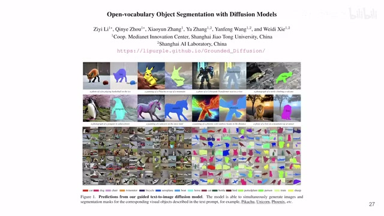
00:00:00–00:00:50 · 画面 001大家好啊今天我们来快速介绍一篇文章Open Vocabulary Object Segmentation with Diffusion Models你可以看到呢从标题它就是用 Diffusion Model一个 Text-to-Image 的 Diffusion Model作为一个基底来帮助我们解决这个 Open Vocabulary Object Segmentation 的问题那具体怎么解决呢核心的思路就是你既然 Diffusion Model 能生成各种各样的图片嘛我就用你生成的图片作为我的训练集
去训练嘛就好了但是呢你生成的只有图片还没完你如果要做 Segmentation 任务的话你必须要有 Ground Truths 才能训练嘛那这个 Ground Truths 从哪里来那么本文的设计呢就是 Ground Truths 也从 Diffusion Model这个生成图像的过程中来这样子呢就实现了一个从 Diffusion Model到这个 Open Vocabulary Segmenter 的这么一个变化那么下面我们直接来看那么首先我们问题的定义
00:00:50–00:02:50 · 画面 002
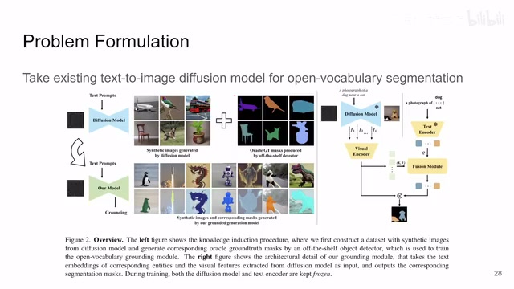
00:00:50–00:02:50 · 画面 002根据我们刚才理清的我们需要训练一个 Open Vocabulary Segmenter它呢就需要我们有一些 Image和对应的这个 Prompt加上我们对应的这个 Mask就是我们需要分割出的物体那么你的 prompt 和这个 image 都好说嘛，但是我们现在缺乏的是一个 mask，这个 mask 的 ground truth 我生成的这张图片里面这个物体它所在的具体的位置它是由谁来决定的呢，这点我们现在是不确定的。那么当然最简单的方法，你直接用一个 off the shelf 的这么一个 detector 或者叫 segmenter，你把 diffusion 生成出来的图片直接扔进去做处理，达到结果就好了，这太简单了。
但是你要不要听听自己在说什么，你最后要训练的是这么一个 open vocabulary 的 detector，然后结果你在训练的过程中你需要用到它，这个寄生蛋诞生鸡了，建议出门隔壁找 distillation 去啊。所以你现在要用的这个 detector 呢，它只能是见过它训练过的东西。那么本文提供的解决思路呢，就是我现在已知的这些类别上用一些 off the shelf 的 detector 给我提供一些基本的这样的 mask，这是我生成的图像嘛，我有一些基本的 mask。那么通过这样一种组合，当然也要包括你生成这些图像时使用的这个 text，使用这个 prompt。那么通过这些组合呢，我们来训练一个 grounding module。
就是右边这个地方这个所有黄色的部分，这个 grounding module 它呢，把 diffusion model 里面这个 denoise 的过程中的这个 intermediate representation，也就是中间的这些 tensor 拿出来，然后呢结合上我们的 text embedding，它们一起产生一个 mask。这个 mask 呢，就是我这个 diffusion model 生成的这张图像那它对应的这个 object 这个 segmentation。
那么这个时候，因为你的 grounding module 它用的 feature 都是来自于你的 diffusion model 的这个 text encoder，也是 diffusion model 里面的嘛，所以不管你的 diffusion model 生成什么样离谱的这个图，那么理论上它都应该是能够生成这样一个对应的这个 object map。那么这个呢，是本文的核心的设计。那么下面我们继续来看这个 grounding module 它的设计啊，它的设计呢其实非常简单，我们看到它有三个部分，这个 visual encodertext encoder 还有这个 fusion module。
00:02:50–00:02:53 · 画面 003
00:02:50–00:02:53 · 画面 00300:02:53–00:02:57 · 画面 004
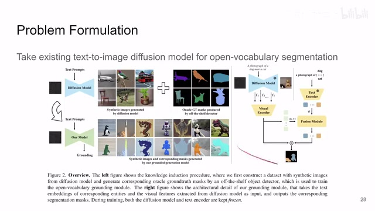
00:02:53–00:02:57 · 画面 00400:02:57–00:02:58 · 画面 005
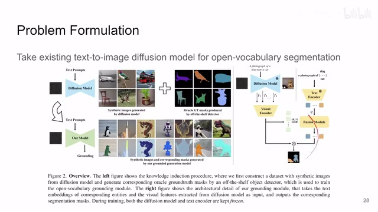
00:02:57–00:02:58 · 画面 00500:02:58–00:04:14 · 画面 006
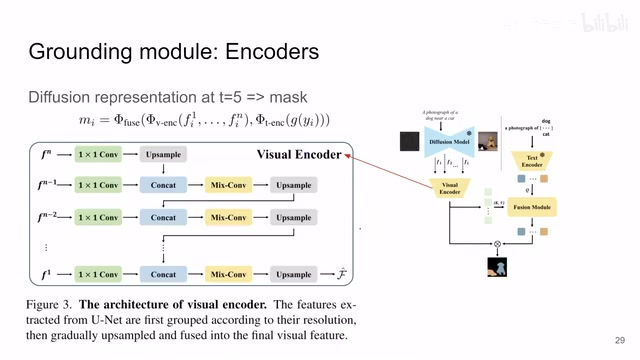
00:02:58–00:04:14 · 画面 006text encoder 呢，你就直接用这个 diffusion model 里面的 text encoder。那么你的图像里面的东西套上这个模板，然后送到你的 text encoder 里面生成一个 embedding，拿出来就好了。那么这里的 visual encoder 呢，你可以看到坐在这里列了这么一个结构对吧，因为你的这个 diffusion model 这个 unet 里面它的 intermediate representation 它是有多个层次的不同层次能抽出来的，所以呢最高层次的啊，你不断的这个上采样
然后呢和下一个层次来给他 concat 一下，然后呢过一个这个 mix convolution，其实这是一个 residual 啊，residual block然后呢，你再上采样和下一层的这个 feature，一直做，一直做，做做做到最后得到一个 embedding。那么下面呢，你只要把这个 Visual 和一个 Text 结合起来，生成一个 Mask 就可以了。那么当然，在我们继续之前呢，我们注意到这个 Diffusion Model 对吧？Diffusion 这么一个过程，它是根据 Diffusion Step 不同，它的 Intermediate Representation 肯定都是不一样的。那这里呢，作者通过实验发现
在这个 t 等于 5 的时候，也就是加到第五步噪声的时候，取得的这个效果是最好的。但是其实你看它那个曲线呢，其实前面只要这个 diffusion step 足够低，其实效果都差不多的。那么下来再看这个 fusion module，它其实更简单了。它本质上呢，就是使用了 MaskFormer 这样一个思想
00:04:14–00:04:26 · 画面 007
00:04:14–00:04:26 · 画面 007那它里面的核心呢，是一个 transformer decodertransformer decoder 无非就是三层嘛。那么第一层呢，先是这个 text self attention。第二层呢，是这个 query 和 key value 的这个 cross attention。那再往下是那个 mlp feed forward network。这些东西是 transformer decoder。那么 decoder 出来之后呢，你每一个 text query 它都有一个这个 embedding。那么作者最后这里的处理呢
00:04:26–00:04:27 · 画面 008
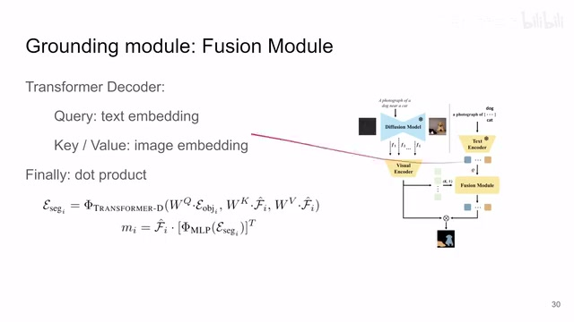
00:04:26–00:04:27 · 画面 00800:04:27–00:05:29 · 画面 009
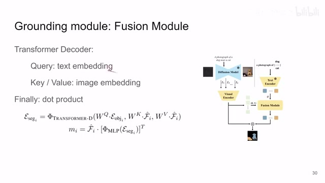
00:04:27–00:05:29 · 画面 009跟 maskformer 跟 sam 都是很相似的，就是我这个 embedding 过一个 mlp，然后呢，它和我们的这个 visual encoder 出来的这个 embedding 它们来做点乘。点乘之后呢，得到一个这个 mask。那这个 mask 呢，那么这个 mask 呢，会被训练成我生成的这个特应的物体，比如说狗它的这个 mask。那么以上呢，就是作者引入的这个 grounding module。那现在你的 diffusion model 既可以生成图，同时呢，还可以生成这个 mask
那你用它能操作的空间就非常大了。那么然后呢，我们就来看这个新添加的这个 module 是怎么训练的吧。首先这个 text encoder 对吧？diffusion model 里面来的，我们就不用训练它了。主要就是看这个 visual encoder 和这个 fusion module。那么也像我们之前说的，这个时候呢，我们需要借助一点 off the shelf 的这个 object detector 的帮助。那么首先呢，我们来准备一个 vocabulary。这个 vocabulary 可以是 coco，可以是 PASCAL，总之就是你有多少个类别嘛
00:05:29–00:06:59 · 画面 010
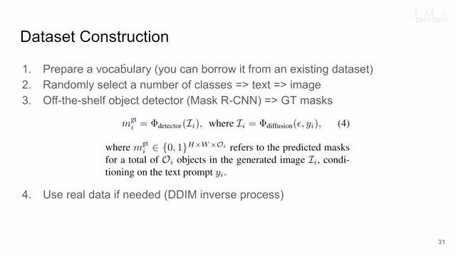
00:05:29–00:06:59 · 画面 010然后呢，你就在里面随机的去选一个或者是两个 class 来组成这个 a photo of cat ，a photo of dog and cat 这样的 prompt组成这样的文本之后送到我们的这个 stable diffusion 里面，会生成相应的图像那么拿到这个图像之后呢，你就可以用 off the shelf 的 object detector这里呢，作者用的是这个 Mask R-CNN 来生成这个 Ground Truth 这个 mask也就是你既然已经知道这个图里面是猫是狗
你就让这个 Mask R-CNN 去把图里面这个猫狗给它找出来嘛那么有了这个 Ground Truthmask 它就和 image 相对应了对吧你就有这样的数据了有了这样的数据加上这个 text 这种 prompt你就可以去训练你的这个 grounding module是这样的一个流程但是注意呢，到现在我们走的那么当然你也可以把真实数据集里面的图像加起来一起训练只不过这个时候呢，你搞到它这个 diffusion 的 latent representation可能会有点困难但是呢也不是不能做
那么我们要注意呢到这个阶段所有的这些训练的数据它都是在这个 vocabulary 里面的但是呢我们这个数据训出来的最后要训的那个 grounding module 它训好之后最后它出来的效果确实变成了一个 open vocabulary 因为你在生成图像的过程中已经把这个 diffusion model 摸得差不多了摸得透透了那么再回来我们有了这个 mask 有了这个 image 怎么去训练这个 grounding module 呢简单的一个这个 binary cross entropy 这么一个 loss
00:06:59–00:07:29 · 画面 011
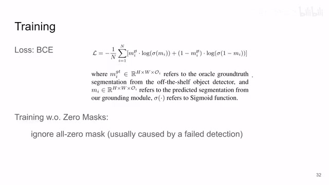
00:06:59–00:07:29 · 画面 011那注意呢这里有一个小的实践上的 trick 就是那么你的 R-CNN 可能检测不出来图像中你想要的物体或者说呢你就是生成的时候就没把那个物体生成出来这个时候呢你的 mask 就是一个全黑的 mask 那这里呢你只要非常简单的把这些全是黑的这个 mask 给它拿掉那么你的数据呢就变得更加干净了性能呢也会更加的好那么这个呢就是本文的主要的技术路线了下面我们来看具体的实验那么首先就是这个 open vocabulary grounding 那比如说 Pascal 里面你有 15 个种类的物体是见过的剩下 5 个呢是没有见过的你就合张在见过的物体上训练完了之后在没有见过物体上呢它的性能的表现
00:07:29–00:08:19 · 画面 012
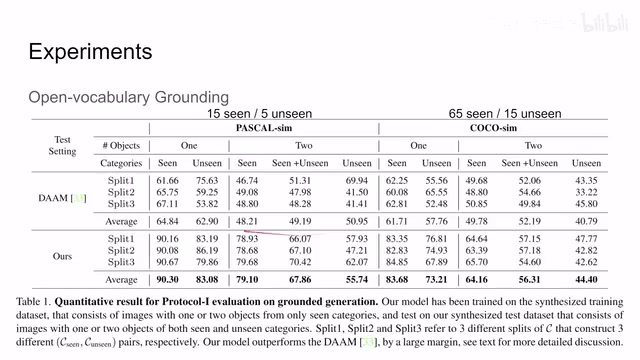
00:07:29–00:08:19 · 画面 012那注意这里在 sim 表示我所有的样本都是从这个 diffusion model 生成出来的我这里的评测呢单纯就是评价我的 grounding module 也就是我那个 vision encoder 和这个 fusion module 他们训练的效果怎么样那么可以看到本文方法相对于之前方法的提升啊那当然这里还有不同的实验配置对吧比如说你一张图里面有一个物体还是两个物体啊然后具体的这个 split 对吧你这个 15 个究竟哪五个种类是没有见过的哪 15 个种类是见过的这个不同的划分它的性能还是不一样的这是一个直观的指标了那么再往下看呢还有这个 segmentation 就是我现在既然能够生成图像能够生成与图像对应的这个 mask 我干脆就用我生成的这些数据去单独的训练一个这个 segmentation module 就相当于我用下游的任务去检测我生成 label 的质量了那么你可以看到呢这里有不同的配置对比之前的方法
00:08:19–00:09:18 · 画面 013
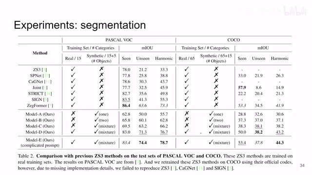
00:08:19–00:09:18 · 画面 013还是感兴趣的朋友非常推荐你到原文去具体的查看每个实验的具体的配置对着它的代码读一读还都是非常清晰的那么总的来说这一篇就是用 Diffusion Model 加上一个 Grounding Module 一开始我用 Off-the-shelf Detector 去逊这个 Grounding Module运好之后这个 Grounding module 就跟 Diffusion module 合作得非常愉快了它就可以随着 Diffusion module 的出途你就可以生成相应的 Mask 你虽然是在一个固定的 Vocabulary 上训练的但是你可以去解决 OpenVocabulary 的问题这当然是一个有点新有点怪的解法有时候你也不知道我们为什么要这么做好的那么以上就是我对这篇文章的一个快速的整理那么感谢您的收看再见
00:09:18–00:09:19 · 画面 014
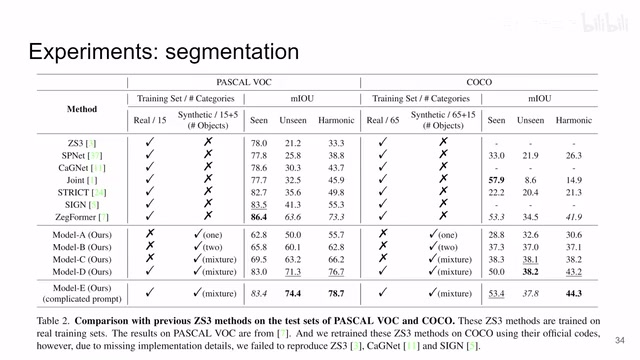
00:09:18–00:09:19 · 画面 014转写与来源说明 · 2 个自动复核提示
保留 71 个原始语音片段，2 个片段触发自动复核提示。提示仅用于定位可能的术语、重复或识别问题，不等于已确认错误。
讲解画面为源视频截图（640×360），不是可编辑 PPT 文件。全片按每秒 2 帧扫描内容变化，逐步展开页保留；连续动画保留代表画面。清晰度受源视频限制。
原视频：paper/合集_2026-10-16_多模态语言模型/[论文速览]Guiding Text-to-Image Diffusion Model Towards Grounded Gen..[2301.05221].mp4
SHA-256：e7f8c72f6d1e5e54f95873c2edd3f732aa7ed89f57536603eb7bacf054295e24
Open Vocabulary Object Segmentation with Diffusion Models
一个 Text-to-Image 的 Diffusion Model
全文按视频语音与画面制作。原论文可从上方链接下载；完整资料包保留全文、原始逐字稿、字幕和校对记录。